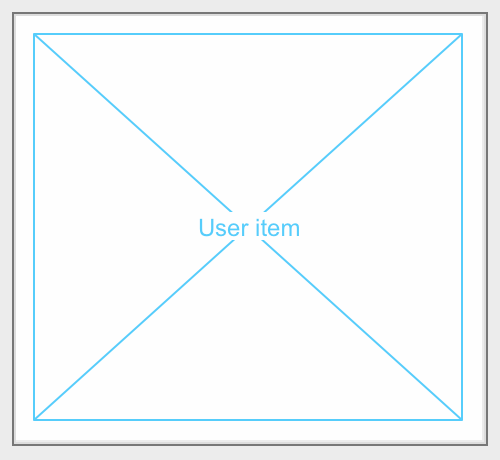
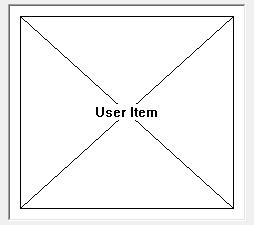

User Item
User items are dialog items of a special type in DG with the following dual character:
- A user item can display any text, image or line drawing. In this respect it is similar to static texts, icon and picture items. However, its drawing area can be used to show more complex information than the above mentioned dialog items.
- On the other hand, a user item is an interactive dialog item so it is similar to user controls as well. If an application needs the same special user interaction in several dialogs, it is advised to develop a user control to solve the task. However, if you need a special dialog item in one dialog only or the item's content should be very rich and context sensitive, a user item seems to be the best solution.
It is the application's responsibility to draw the user item whenever it needs to be updated. By default a user item is drawn without frame, however it can have three types of frames: static edge, client edge and modal frame. The following images show a user item with client edge frame.
-
 
Item type
- DG_ITM_USERITEM
Subtypes
-
Subtype Meaning DG_UT_NORMALUPDATE The user item receives DG_MSG_UPDATE messages with DG_UUT_NORMAL update type only. DG_UT_PARTIALUPDATE The user item receives DG_MSG_UPDATE messages with both DG_UUT_NORMAL and DG_UUT_PARTIAL update types.
Frame types
-
Frame type Meaning DG_FT_NONE It will be drawn without frame. DG_FT_STATIC Thin three-dimensional border with a sunken edge. 

DG_FT_CLIENT Thick three-dimensional border with a sunken edge. 

DG_FT_MODAL Thick three-dimensional border with a raised edge. 

GRC Specification
UserItem x y dx dy [PartialUpdate] [frameType]
where x and y are the pixel coordinates of the upper left corner of the user item, dx and dy are the item width and height in pixels. Set the optional PartialUpdate flag to enable partial update. If the optional frameType flag is omitted, the user item is drawn without frame.
Possible values of frameType:
-
Value Meaning Default The DG_FT_NONE frame type is set. StaticEdge The DG_FT_STATIC frame type is set. ClientEdge The DG_FT_CLIENT frame type is set. ModalFrame The DG_FT_MODAL frame type is set.
Messages
-
Message Meaning DG_MSG_CLICK The user item is clicked. The message data parameter is a pointer to a DGUserMsgData structure cast to DGMessageData. This structure contains information about the user action. DG_MSG_DOUBLECLICK The user item is double clicked. The message data parameter is a pointer to a DGUserMsgData structure cast to DGMessageData. This structure contains information about the user action. DG_MSG_MOUSEMOVE The mouse is over the user item. The message data parameter is a pointer to a DGUserMsgData structure cast to DGMessageData. This structure contains information about the user action. DG_MSG_UPDATE The user item should be fully or partially redrawn. The user update data parameter is a pointer to a DGUserUpdateData structure cast to DGMessageData. This structure contains all the necessary information to update the user item by the application. DG_MSG_DRAGDROP Drag and drop related event occured. User items can be both drag source and target.
Remarks
User items receive DG_MSG_UPDATE messages whenever they should be updated. If the update process of a user item takes too much time, it is advised to enable partial update for that item. If partial update is enabled, in addition to normal update messages DG sends partial update messages also automatically or for the application's requirement in the following cases:
- If the application opens, shows, maximizes or restores a dialog, all dialog items will be updated in the dialog item order. If there is a user item which takes long time to redraw and the partial update is enabled for it, a partial update message is sent when it is about to be redrawn. A normal update message is sent later only after all other dialog items have been updated. In this way during these actions it can be avoided that the dialog items following the user item in the item order remain invisible while updating the user item.
- On Windows, if the full drag mode is switched on in the system and the partial update is enabled, DG sends partial update messages while the user moves or sizes the parent dialog of the user item and sends one normal update message as soon as the user finishes moving or sizing the dialog. If the partial update is disabled, normal update messages are sent instead of partial update messages and the user item is fully repainted with each mouse move, so the resizing of the dialog is jerky.
- The application disabled the normal update mechanism on a dialog with the DGDisableNormalUpdate function. In this case all user items of the dialog which have partial update enabled receive partial update messages only. If the normal update mechanism is restored with DGEnableNormalUpdate a normal update message is sent to the user item. Here are an example when disabling the normal update for a dialog is useful: assume that the application has opened many modeless windows simultaneously, each one having a user item with graphics taking long time to calculate and redraw, and these windows need to be arranged on the screen (tiled or cascaded for example). If the partial update is not enabled the windows are arranged in the following manner: the first window is moved to its new position, resized and the whole content is redrawn. Until the redraw process lasts the size and position of the next window is unchanged. Between arranging two windows long time expires. If the partial update is enabled the first window is moved, resized and receives a partial update message. Responding to this message it can repaint its background and do some basic drawing functions without time consumption. This process continues with the next window. After all windows have their new positions and sizes set, DG sends normal update messages for each window. In this case no window arrangement happens after the first normal update message is sent.
When the dialog callback function receives a DG_MSG_UPDATE message the msgData parameter is a pointer to a DGUserUpdateData structure that contains all the necessary information to update the user item by the application. The message type can be one of the DG_UUT_NORMAL, DG_UUT_PARTIAL and DG_UUT_INUPDATE values. If the user item should be fully repainted DG sends an update message with the DG_UUT_NORMAL type. If the user item needs to be partially updated and the partial update is enabled, DG_UUT_PARTIAL type update messages are sent. Typically an application erases the background, draws frame or does some basic drawing when it receives a partial update message. DG_UUT_INUPDATE type messages are sent in special cases: if the update function takes long time and leaves the control to run out to the event loop and over there an other update event is generated (because of a task switching for example) during the update process. In this case the application can clip out the new invalid region from the update region of the interrupted update process.
Before sending update messages DG erases the invalidated parts of the user item with the default background color. This color can be set and retrieved with the DGUserSetBackgroundColor and DGUserGetBackgroundColor functions respectively.
With every update message the current invalid region is sent in the message data. If partial update is enabled for a user item the regions which are sent with partial update messages are collected by DG and the union of them are sent with a normal update message when the partial update ends. The update region handle is returned in the updateRgn member of the DGUserUpdateData structure. It should be cast to HRGN on Windows, on Macintosh it is always nullptr.
The application can use system dependent drawing functions on user items. The drawing context is sent in the drawContext member if the DGUserUpdateData structure. This member should be cast to HDC on Windows and to CGContextRef on Macintosh. The origin of the drawing context is set to the upper left corner of the user item.
Partial update on a user item can be enabled in the GRC script. To take control over the default user item update mechanism use the DGEnableNormalUpdate and DGDisableNormalUpdate functions.
If the user item should be redrawn immediately use the DGUserRedrawItem function with displayImmediately = true parameter otherwise the DGUserRedrawItem function can be used with displayImmediately = false parameter.
If the user item has frame, the frame is clipped out from the update area. Use DGUserGetClientRect function to retrieve the rectangle in which the application can draw. If the user item has no frame DGUserGetClientRect and DGGetItemRect retrieve the same values.
User items can receive DG_MSG_MOUSEMOVE messages when the cursor is moving over them. By default DG does not send the DG_MSG_MOUSEMOVE messages to a user item. If the application needs this message the DGEnableMessage should be called for the user item with DG_MSG_MOUSEMOVE as its third parameter. To change the cursor to a custom form, one should be returned when handling DG_MSG_MOUSEMOVE messages to prevent DG from setting back the default cursor over the user item. If zero is returned DG sets the default arrow cursor.
Requirements
- Version: DG 2.2.0 or later
- Header: DG.h
See Also
Dialog item types, Icon, Picture, Static Text, User Control
DGUserRedrawItem, DGEnableNormalUpdate, DGDisableNormalUpdate, DGEnableMessage
DGUserUpdateData, DGUserMsgData
Callback functions, DG_MSG_CLICK, DG_MSG_DOUBLECLICK, DG_MSG_MOUSEMOVE, DG_MSG_UPDATE